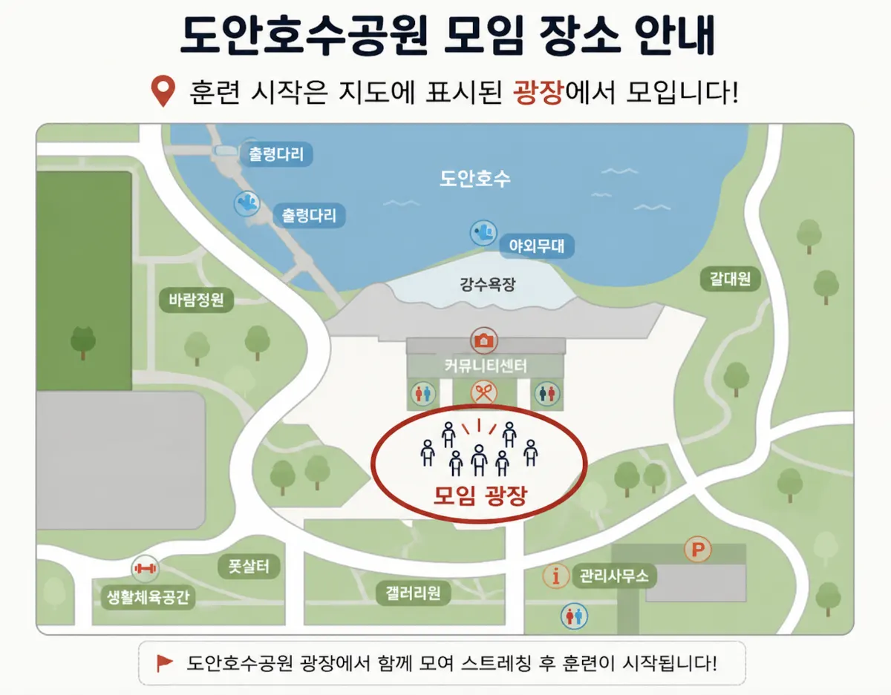

처음 시작하는 분도 부담 없이 완주 감각을 익히는 목표입니다.
WHEN월 · 수 · 금 · 토
START오전 05:30
WHERE모임 광장
30초 안내
기록보다 먼저,
꾸준히 달릴 아침을 만듭니다.
연령 제한 없이 남녀노소 누구나 함께할 수 있어요. 처음 오셨다면 빠르게 달리는 것보다, 내 몸에 맞는 속도로 시작하는 데 집중합니다.
REGULAR RUN / 01
매주, 이렇게 달려요.
월·수·금·토 아침. 05:30부터 몸을 깨우고 06:00에 함께 출발합니다.
월 MON수 WED금 FRI토 SAT
기본 체력을 바탕으로 거리와 페이스를 차근히 늘리는 목표입니다.
마라톤 대회 준비까지 각자의 목표에 맞춰 함께 훈련합니다.
-
WARM UP
모여서 워밍업
05:30부터 도안호수공원에 모여 몸을 천천히 깨웁니다.
-
MAIN RUN
그룹 메인 러닝
06:00에 함께 시작합니다. 처음 온 분도 본인 속도에 맞춰 달릴 수 있어요.
-
FREE FINISH
자유롭게 마무리
운영은 약 07:30까지 이어지지만, 개인 일정에 맞춰 먼저 마쳐도 괜찮습니다.
YOUR FIRST RUN / 02
첫날은 어렵지 않게.
혼자 오셔도 됩니다. 빠르지 않아도 됩니다. 처음 오신 분은 출발 전 운영진이 안내합니다.
-
01
공식채널 문의
첫 참여 전 카카오톡 공식채널에서 일정과 당일 안내를 확인합니다.
-
02
모임 광장 집결
도안호수공원 모임 광장에서 05:30부터 함께 워밍업합니다.
-
03
내 일정대로 마무리
운동 중에도 개인 일정에 맞춰 자유롭게 마치고 돌아갈 수 있습니다.
마지막 사람도
함께 돌아옵니다.
MEETING POINT
도안호수공원 모임 광장
훈련 시작은 지도에 표시된 모임 광장에서 함께 모여 스트레칭 후 진행됩니다.

WHAT TO BRING
처음 오실 때 준비물
- 움직이기 편한 운동복
- 러닝화 또는 가벼운 운동화
- 개인 물 또는 물병
새벽 시간에는 밝은색·반사 소재 용품을 추천합니다. 몸 상태가 좋지 않거나 통증이 있다면 무리하지 말고 운영진에게 알려주세요.
헷갈리는 것만 먼저 확인하세요.
처음 참여 준비물, 러닝화 사이즈 비교표, 5km·하프·풀코스 준비 체크리스트를 모아두었습니다.
준비자료 보러가기 ↗DOAN ROUTES
우리는 도안호수를
이렇게 달립니다.
처음 오신 분도 길을 몰라 걱정하지 않도록, 정기런은 익숙한 코스를 기준으로 함께 움직입니다. 그날의 인원과 컨디션에 따라 거리와 페이스는 조정됩니다.
처음런 코스
첫 참석자와 초보 러너가 부담 없이 적응할 수 있는 짧은 코스입니다.
처음 참여 기준
기본런 코스
정기런에서 가장 자주 활용하는 도안호수 기본 루트입니다.
정기런 기본
도전런 코스
하프·풀코스 준비를 위해 거리와 페이스를 조금씩 늘려가는 코스입니다.
목표 러닝CREW DISTANCE
함께 달린 거리가
크루의 기록이 됩니다.
제출된 러닝 기록은 개인 이름을 공개하지 않고, 크루 전체 누적 거리로만 반영합니다.
테스트 운영 중
Total
0km
평균 기록
0km
집계 데이터
0건
최고 기록
0km
기록 제출은 선택입니다. 이름은 공개하지 않고 크루 전체 거리로만 더합니다.
최근 업데이트
GUEST TO MEMBER / 04
먼저 함께 달려보고,
정회원이 됩니다.
- 01게스트로 참여
먼저 정기 러닝을 함께 경험해요.
- 02월 3회 이상 참석
편안하게 적응하며 서로에게 익숙해지는 시간입니다.
- 03신청서 작성
입회신청서에 필요한 내용을 작성해요.
- 04운영진 확인
내용 확인 후 정회원으로 안내합니다.
MEMBER FEE
정회원 회비는 월 10,000원이며, 훈련 시 급수·보급, 대회 참가 지원 등 크루 운영에 사용합니다. 사용 내역은 매월 정회원 채널을 통해 안내합니다.
OUR CULTURE
도안호수러닝크루는
달리기를 통해 삶의 리듬을 함께 만듭니다.
- 01시작하는 힘
잘 뛰기보다 먼저, 아침에 나오는 것부터 시작합니다.
- 02이어가는 힘
혼자서는 어려운 꾸준함을 함께 달리며 이어갑니다.
- 03바뀌는 힘
달리기가 운동을 넘어 나를 돌보는 시간이 됩니다.
OUR CHANNELS / 05
처음 문의는
카카오톡 공식채널로 해주세요.
01카카오톡 공식채널
신규 문의, 첫 참여 안내, 당일 진행 여부를 확인하는 공식 연락 채널입니다.
OPEN CHAT ↗
보조 채널 안내
- 당근 모임동네 유입 채널보기 ↗
- 인스타그램추후 개설 예정
- 네이버 밴드정회원 전용 · 공개 링크 없음
FAQ
처음 오기 전
자주 묻는 질문입니다.
러닝을 처음 해도 괜찮나요?
네. 연령 제한 없이 남녀노소 누구나 함께할 수 있습니다. 첫 방문이라면 카카오톡 공식채널로 먼저 문의해 주세요.
07:30까지 꼭 있어야 하나요?
아니요. 운영은 약 07:30까지 이어지지만, 운동 중에도 개인 일정에 맞춰 자유롭게 마무리할 수 있습니다.
정회원은 바로 가입하나요?
먼저 게스트로 월 3회 이상 정기 러닝에 참석한 뒤, 신청서를 작성하고 운영진 확인을 거쳐 안내받습니다. 정회원 회비는 월 10,000원입니다.
사이트에서 멤버 사진을 볼 수 있나요?
공개 사이트에는 사진첩을 만들지 않습니다. 사진과 기록은 회원 전용 네이버 밴드에서 관리합니다.
SEE YOU AT 05:30
다음 아침,
호수에서 만나요.
월·수·금·토 05:30 워밍업
06:00 그룹 메인 러닝